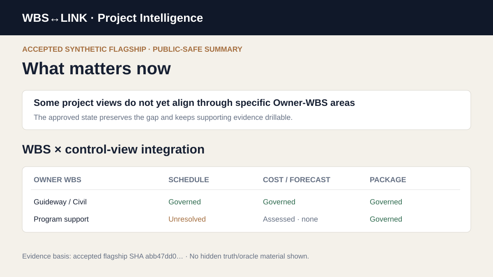
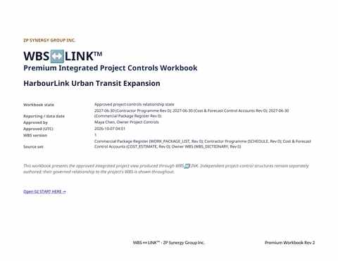
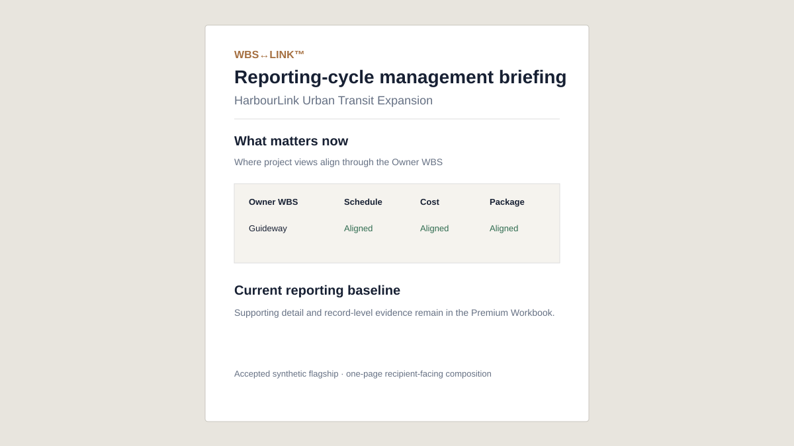
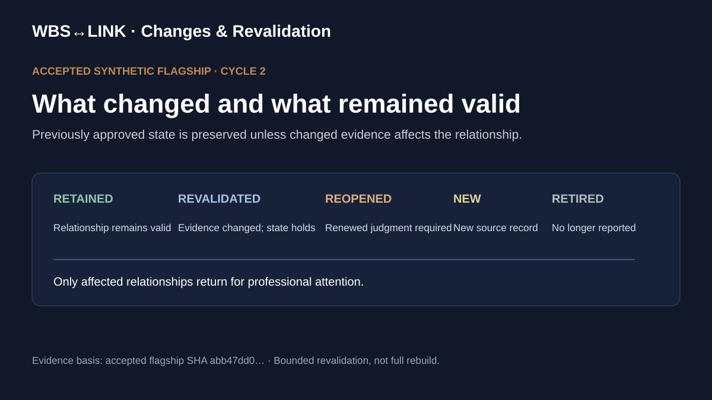

Source meaning
Independent views stay intact.
PROJECT-CONTROLS RELATIONSHIP INTELLIGENCE
Your schedule, cost forecast and contracts can all be right, yet tell different stories about the same scope. Who has proved they align?
Synthetic demonstration. Professional decisions remain with your team.
VIDEO 1 · THE CHALLENGE
Three credible views. One unanswered question: do they describe the same scope?
THE INTEGRATION SPINE
Independent views stay intact. Their relationships to the Owner WBS become visible and reviewable.
Independent views stay intact.
Unproven links remain open.
People decide and approve.
Keep what still holds.
WHY THIS IS DIFFERENT
Scheduling, cost and contract systems retain authority for their own data.
Useful for analysis and joins. Relationships, uncertainty and changes still need governance.
Useful for interpretation. WBS↔LINK maintains reviewed relationship state across cycles.
Useful where stable. Revisions still require evidence-based revalidation.
VIDEO 2 · HOW WBS↔LINK WORKS
See how project files become reviewed relationships, approved intelligence and reusable reporting-cycle evidence.
ACCEPTED FLAGSHIP PROOF
Accepted synthetic flagship evidence.




Evidence basis: accepted synthetic flagship state. No hidden truth/oracle content is published here.
THE REPORTING-CYCLE ADVANTAGE
Once a relationship state is approved, the next reporting cycle can preserve what remains valid and isolate what changed.
Only relationships affected by changed evidence return for renewed professional attention. That is persistent governed intelligence, not a one-off analysis.
STANDARD FIRST-RUN EXPERIENCE
HarbourLink is the accepted blind practice project: a fictional major-infrastructure controls environment with independently authored Owner WBS, schedule, cost/forecast and package views across two reporting cycles.
Start with Cycle 1. Build and approve the governed relationship state. Then move to Cycle 2 and see what carries forward and what returns for attention.
Blind package only. No answers, scoring keys, hidden truth or oracle material are included.
CONTROLLED PRIVATE DEMONSTRATION
We can discuss a private demonstration or controlled pilot path. Do not send confidential, client or employer project files through this public site.
Request a private demonstrationCOMMUNITY / BENCHMARK / RESEARCH
The benchmark remains available for practitioners who want to test their own method. It is a community research surface, not the definition of the product.
START WITH PROOF